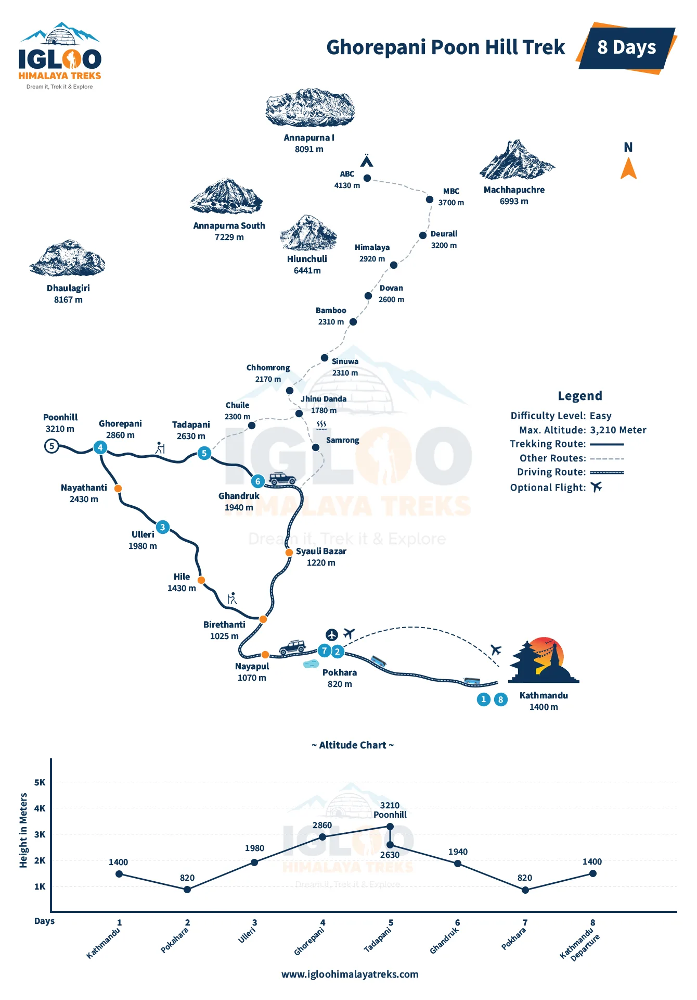
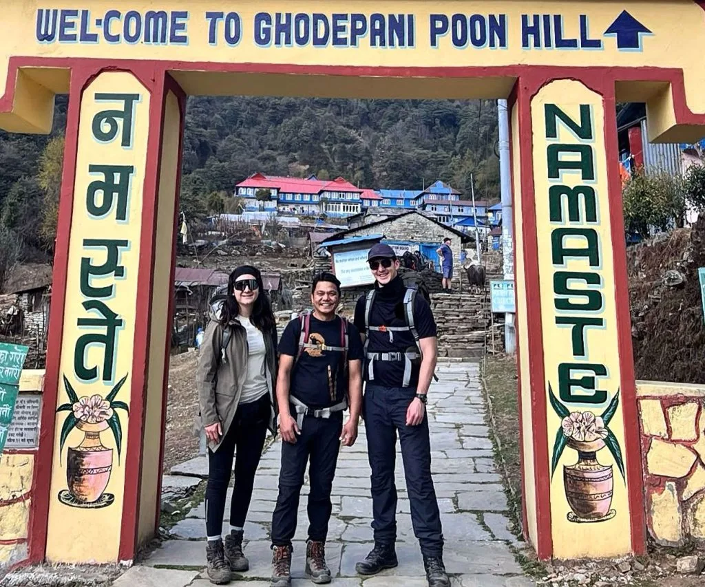
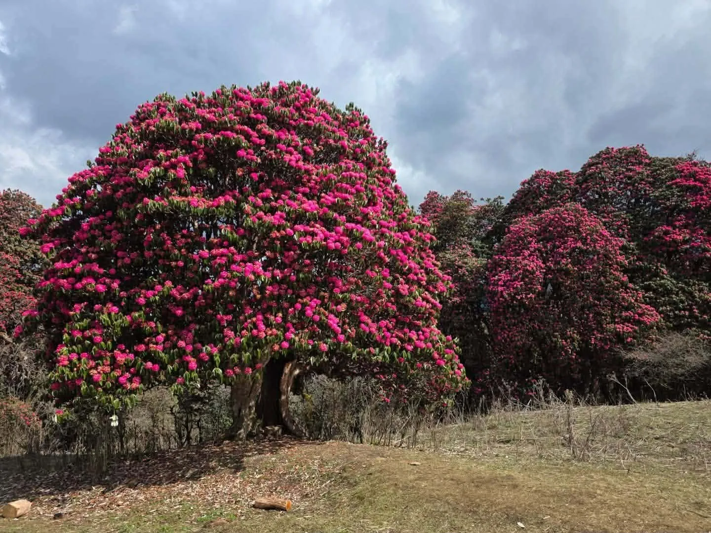
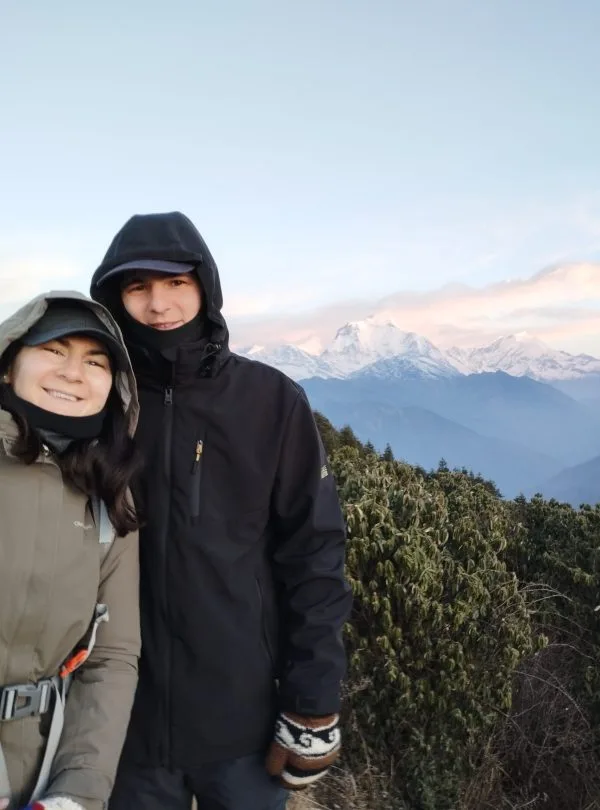

The World's Greatest Himalayan Sunrise: Why Poon Hill Captivated Millions
Few viewpoints on the planet command the reverent reputation of Poon Hill. Situated in the Myagdi District within the Annapurna Conservation Area, this grassy, prayer-flag-strewn knoll rises directly above the historic trading village of Ghorepani.
What makes Poon Hill legendary is its unique geographic position. Located directly across the deep Kali Gandaki river valley from the Dhaulagiri massif and immediately southwest of the Annapurna range, Poon Hill functions as a natural balcony overlooking two of the world's fourteen 8,000-meter giants simultaneously. Unlike long-distance expedition treks that require two weeks of rugged walking to view extreme peaks, Poon Hill delivers world-class Himalayan grandeur on just the third morning of your hike.
The Morning Sunrise Pacing Secret: The pre-dawn hike from Ghorepani (2,860m) to the Poon Hill summit tower (3,210m) takes approximately 45 to 60 minutes of uphill stair climbing. Depart your lodge at 4:45 AM or 5:00 AM with a headlamp to arrive at the viewpoint 30 minutes before sunrise. Watching the deep purple night sky transition into soft pink and blazing amber is vastly more magical than arriving after the sun has already crested the peaks.
The 360° Amphitheater: Dhaulagiri I (8,167m) & Annapurna Massif Alpenglow
Standing beside the metal viewing tower at 3,210 meters on a clear morning, you are surrounded by an unbroken 360-degree panorama encompassing over twenty dramatic snowbound peaks:
| Mountain Peak | Altitude (m / ft) | Range / Massif | Visual Character from Viewpoint |
|---|---|---|---|
| Mt. Dhaulagiri I | 8,167m / 26,795ft | Dhaulagiri Range | 7th highest in world; colossal white pyramid dominating the western horizon. |
| Annapurna I | 8,091m / 26,545ft | Annapurna Massif | 10th highest in world; majestic glaciated peak glowing pink in early dawn. |
| Annapurna South | 7,219m / 23,684ft | Annapurna Massif | Rising sheer and massive directly opposite the viewing deck. |
| Machapuchare ('Fishtail') | 6,993m / 22,943ft | Annapurna Massif | The iconic sacred unclimbed pyramid, showing its twin-horned profile. |
| Hiunchuli | 6,441m / 21,132ft | Annapurna Massif | Flanking Annapurna South; intricate fluted snow gullies. |
| Nilgiri South & North | 6,839m / 22,438ft | Nilgiri Himal | Soaring high above the deep Kali Gandaki river canyon. |
| Tukuche Peak | 6,920m / 22,703ft | Dhaulagiri Range | Dramatic glaciated dome flanking Dhaulagiri's eastern ridge. |

The Classic 4-Day & 5-Day Circular Route Itineraries
The standard Ghorepani Poon Hill trek is walked as a scenic horseshoe loop starting at Nayapul or Tikhedhunga and concluding at Ghandruk or Siwai, ensuring you never repeat the same trail twice:
| Day | Route & Trail Segment | Distance | Trek Hours | Sleeping Alt. | Daily Strategic Highlight |
|---|---|---|---|---|---|
| Day 01 | Drive Pokhara to Tikhedhunga/Ulleri, trek to Ulleri | 9.0 km | 3.5 - 4.5 hrs | 1,960 m | Cross suspension bridges; ascend Ulleri stone staircases; village view. |
| Day 02 | Ulleri to Ghorepani via Banthanti & Nangethanti | 9.5 km | 4.5 - 5.5 hrs | 2,860 m | Immerse in ancient mossy rhododendron forests; cool mountain air. |
| Day 03 | Poon Hill sunrise (3,210m), trek to Tadapani | 11.0 km | 5.5 - 6.5 hrs | 2,630 m | Dawn sunrise spectacle; ridgeline hike through Deurali gorge to Tadapani. |
| Day 04 | Tadapani to Ghandruk village, drive to Pokhara | 7.5 km trek + drive | 3 hrs trek + 2.5 hrs drive | 820 m | Explore historic Gurung stone village; return drive to Pokhara lakeside. |
A 5-Day Itinerary adds an overnight stay in the traditional cultural village of Ghandruk (1,940m), allowing time to visit the local Gurung museum, sample local millet wine (raksi), and enjoy a relaxed, leisurely descent.

Conquering the Infamous 3,280 Stone Steps of Ulleri
The defining physical challenge of Day 1 is the legendary Ulleri Staircase. Rising from the suspension bridge at Tikhedhunga (1,540m) to the village of Ulleri (1,960m), this relentless staircase comprises 3,280 hand-chiseled stone steps straight up a steep mountain spine.
While the stairs look daunting from the riverbank, conquering them is purely a matter of pacing and biomechanics:
- The 'Sherpa Pace': Never rush. Take small, measured steps, placing your entire foot flat on the stone tread to engage your glutes rather than relying solely on your calves.
- Cadence Breathing: Inhale for one step, exhale for the next. Syncing your respiration with foot movement prevents cardiovascular redlining.
- Trekking Poles: Set your poles to waist height and plant them with each upward step, transferring 15% of the lifting workload into your arms and shoulders.

Walking Through the Planet's Largest Rhododendron Sanctuary
Between Banthanti, Nangethanti, and Ghorepani lies the largest contiguous rhododendron forest on Earth. In Nepal, the rhododendron (known locally as Lali Gurans) is revered as the national flower, with over 30 distinct species thriving in the Annapurna foothills.
In spring (March and April), this entire forest canopy erupts into a dazzling floral explosion of crimson, scarlet, coral pink, and pure white blossoms. Walking beneath ancient, gnarled rhododendron trees reaching 15 meters in height—with blooming petals blanketing the mossy stone trail underfoot and snowcapped peaks gleaming through the branches—is a sensory experience that feels straight out of a fairy tale.

Gurung and Magar Mountain Heritage: Ghorepani & Ghandruk Traditions
Beyond its scenic wonders, the Poon Hill circuit is an authentic cultural immersion into the traditional homelands of the Poon Magar and Gurung communities—famed globally as the brave warriors of the British and Indian Army Gurkha regiments.
The village of Ghorepani ('Horse Water') was historically an essential resting stop for trans-Himalayan mule and horse caravans trading salt and grain between Pokhara and Tibet. Today, local families welcome travelers with genuine warmth. Further along the trail, the historic village of Ghandruk is a living open-air museum: tidy cobblestone footpaths wind between slate-roofed stone houses, hand-carved wooden windows, and terraced fields of barley and buckwheat.
Elevation Profile & Family-Friendly Altitude Safety (3,210m Apex)
One of the primary reasons the Poon Hill Trek is recommended for families, seniors, and novices is its safe altitude profile. Severe high-altitude illnesses (such as HAPE and HACE) almost exclusively occur above 3,500 to 4,000 meters.
On Poon Hill, your sleeping altitudes are very moderate:
- Ulleri: 1,960 meters (negligible altitude impact).
- Ghorepani: 2,860 meters (mild elevation; easily tolerated by 99% of hikers).
- Tadapani: 2,630 meters (comfortable recovery elevation).
- Poon Hill Peak: 3,210 meters (reached only for 1 to 2 hours at sunrise before descending to Ghorepani for breakfast).
Because you only spend a short time at 3,210m and sleep lower, the risk of Acute Mountain Sickness (AMS) is extraordinarily low. Staying hydrated with 3 liters of warm water daily and avoiding alcohol ensures a completely headache-free adventure.
Teahouse Standards: Hot Showers, Bakeries, WiFi & Mountain Dining
Because the Ghorepani route has welcomed international travelers for decades, teahouse infrastructure is among the most comfortable and developed in Nepal:
- Rooms: Clean private twin bedrooms with foam mattresses, fresh cotton sheets, pillows, and cozy blankets. Many lodges in Ghorepani and Ghandruk feature private attached bathrooms.
- Hot Showers: Reliable solar and gas-geyser hot showers are available at virtually every teahouse (often included or for a modest fee of NPR 200–300).
- Gastronomy & Bakeries: Ghorepani features several German and French bakeries serving hot apple pies, chocolate croissants, and real espresso. Teahouse menus offer extensive choices: freshly cooked Dal Bhat, pizzas, momos, pancakes, potato rosti, and noodle soups.
- Connectivity: Strong 4G mobile data coverage (NTC and Ncell) extends across almost the entire route, allowing you to share your sunrise photos instantly.

Best Seasons to Trek: Autumn Golden Skies vs Spring Floral Explosions
The climate on Poon Hill is pleasant and temperate across most of the year, with two distinct golden windows:
| Season | Sunrise Viewpoint Temp | Daytime Hiking Temp | Atmospheric Sky Clarity | Seasonal Trail Character |
|---|---|---|---|---|
| Autumn (Oct - Nov) | 0°C to 4°C | 16°C to 22°C | 100% crystal clear | Peak season; deep blue skies, crisp mountain visibility, lively lodges. |
| Spring (Mar - Apr) | 2°C to 6°C | 18°C to 24°C | 85% clear mornings | Floral wonderland; rhododendron forests in full vibrant bloom. |
| Winter (Dec - Feb) | -4°C to -8°C | 10°C to 15°C | 90% clear / dry | Peaceful and uncrowded; light snow on Poon Hill; crisp winter photography. |
| Monsoon (Jun - Aug) | 12°C to 16°C | 20°C to 26°C | Heavy clouds / rain | Lush green terraces, but leeches, muddy steps, and obscured views. |
Packing Smart: Daypack Essentials, Layering & Footwear
Because teahouses are comfortable and elevations are moderate, packing for Poon Hill is simple and lightweight. Your daypack should weigh no more than 5 to 6 kilograms:
- Footwear: Lightweight, waterproof hiking shoes or mid-cut boots with good traction. Heavy mountaineering boots are completely unnecessary.
- Warm Sunrise Layers: While daytime hiking is comfortable in shorts or light pants, dawn on Poon Hill (3,210m) is brisk (0°C to 4°C). Pack a medium down jacket, warm fleece beanie, and lightweight windproof gloves.
- Two Trekking Poles: Crucial for saving your knees during the 3,280 steps of Ulleri and the descent from Deurali to Tadapani.
- Headlamp: Mandatory for the 4:45 AM pre-dawn stair climb from Ghorepani to the Poon Hill summit tower.
Permits & Regulations: ACAP, TIMS & Mandatory Guide Mandate
The Poon Hill circuit requires standard Annapurna Conservation Area permits, inspected at the Birethanti checkpost:
- Annapurna Conservation Area Project (ACAP) Permit: NPR 3,000 (~USD $23) per person for foreign nationals.
- TIMS Card (Trekkers' Information Management System): NPR 2,000 (~USD $15) per person.
- Poon Hill Viewpoint Entry Ticket: NPR 150 (paid in cash at the viewpoint entrance booth at dawn).
- Mandatory Guide Rule: Foreign trekkers are required by Nepal Tourism Board regulations to hike with a certified guide registered through a licensed trekking agency. Your guide manages permits, private jeep transport, and teahouse bookings, ensuring a completely hassle-free holiday.
Complete 2027 Budget Ledger: Teahouse Costs, Transport & Guides
The Poon Hill Trek is one of the most affordable Himalayan adventures in the world. Below is a realistic 2027 cost breakdown for a 4-day guided trek:
| Expense Category | Estimated Cost (NPR) | Estimated Cost (USD) | Budget Notes |
|---|---|---|---|
| Permits (ACAP + TIMS + Viewpoint) | NPR 5,150 | ~$39 | Official government conservation and entrance fees. |
| Private Transport (Pokhara round-trip) | NPR 8,000 - 10,000 total | ~$60 - $75 total | Private car/taxi to Nayapul + 4WD return jeep from Ghandruk. |
| Teahouse Lodging (3 nights) | NPR 500 - 800 / night | ~$4 - $7 / night | Clean private twin bedroom in mountain teahouses. |
| Daily Meals & Hot Drinks (4 days) | NPR 2,800 - 3,500 / day | ~$21 - $27 / day | Hearty breakfast, lunch, warm dinner, and hot teas daily. |
| Certified Trekking Guide | NPR 3,500 - 4,500 / day | ~$26 - $34 / day | Includes guide's wage, food, lodging, and professional insurance. |
| Porter (Optional, carries 18-20kg) | NPR 2,800 - 3,200 / day | ~$21 - $24 / day | Allows you to hike with only a small, light daypack. |
| Total 4-Day Guided Budget | NPR 38,000 - 48,000 | ~$290 - $380 USD | Outstanding value for an iconic Himalayan mountain journey. |
Exciting Route Extensions: Mohare Danda, Khopra Ridge & ABC Linkup
If you have extra days, Poon Hill seamlessly connects with several magnificent alternative routes:
- Mohare Danda Eco-Trek (adds 2 days): A community-based eco-trail parallel to Poon Hill that offers an even higher viewpoint (3,300m) with zero crowds and wireless solar internet.
- Khopra Ridge & Khayer Lake (adds 3 to 4 days): Branches north from Tadapani onto a high alpine ridge (3,660m) directly beneath the south face of Annapurna South, leading to the sacred alpine lake of Khayer (4,660m).
- Annapurna Base Camp Extension (adds 5 to 6 days): From Tadapani, instead of descending to Pokhara, you turn north to Chhomrong and hike directly into the Annapurna Sanctuary.

The 10 Commandments of an Unforgettable Poon Hill Sunrise Trek
To ensure your Poon Hill adventure is safe, rewarding, and unforgettable, commit these ten golden rules to memory:
- Arrive at the Viewpoint 30 Minutes Before Sunrise: The pre-dawn alpenglow color transition is far more dramatic than full daylight.
- Pace Yourself on the 3,280 Ulleri Steps: Take small, rhythmic steps and sync your breathing to your feet.
- Always Use Two Trekking Poles: Essential for cushioning knees on the steep descent from Deurali to Tadapani.
- Pack a Warm Hat and Down Jacket for Dawn: 3,210m at 5:00 AM is brisk; staying warm lets you enjoy the sunrise in complete comfort.
- Trek in Spring for Rhododendron Blooms: Visit in March or April if you want to walk through the world's largest blooming forest.
- Carry Cash in Small Bills: Withdraw at least NPR 20,000 in Pokhara; teahouses cannot process credit cards.
- Drink 3 Liters of Water Daily: Stay properly hydrated to keep your muscles firing smoothly on stone stairs.
- Try Fresh Apple Pie in Ghorepani: Freshly baked local pastries with hot lemon ginger tea is the ultimate trail treat.
- Stay an Extra Night in Ghandruk: Enjoy the living Gurung cultural heritage, museums, and stone architecture.
- Trek With a Trusted Local Partner: Book with Igloo Himalaya Treks for certified guides, private transport, and flawless mountain logistics.


Ready to Experience the Himalayas?
Whether you are preparing for high-altitude trekking, cultural circuits, or alpine summit expeditions, start planning a bespoke journey tailored to your fitness, travel season, and style.